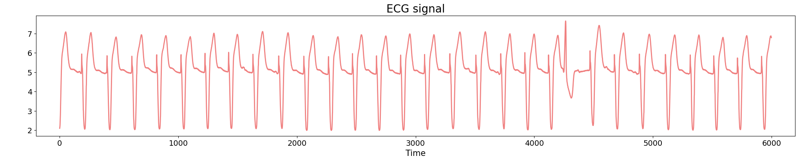
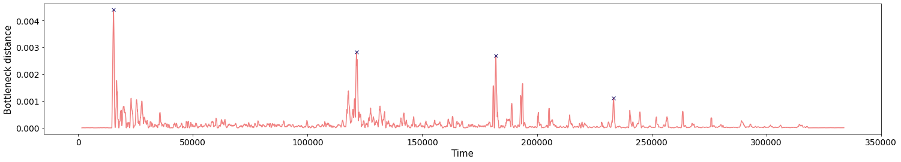

Topological time series analysis
XIMENA FERNANDEZ
EPSRC Centre for Topological Data Analysis
Applied Math Seminar - October 13, 2021
Durham University

Persistent homology
$\bullet$ Boissonnat, J.-D., Chazal, F., Yvinec, M. Geometric and Topological Inference. (2018).
$\bullet$ Otter, N., Porter, M.A., Tillmann, U. et al. A roadmap for the computation of persistent homology. EPJ Data Sci. 6, 17 (2017).
$\bullet$ Edelsbrunner, H., Harer, J. Persistent Homology - a Survey. (2000)
Topological inference
Let $(X, d)$ be a metric space and let $\mathbb{X}_n = \{x_1,...,x_n\}$ a finite sample of $X$.
Q: How to infer the homology of $X$ from $\mathbb{X}_n$?
Point cloud
$\mathbb{X}_n \subset \mathbb{R}^D$
For $\epsilon>0$, the $\epsilon$-thickening of $\mathbb{X}_n$:
\[\displaystyle U_\epsilon = \bigcup_{x\in \mathbb{X}_n}B_{\epsilon}(x)\] 
Theorem (Niyogi, Smale & Weinberger, 2008). Given $\mathcal{M}$ a compact submanifold of $\mathbb{R}^D$ of dimension $k$ and $\mathbb{X}_n$ a set of i.i.d. $n$ points drawn according to the uniform probability measure on $\mathcal{M}$, then $$ U_\epsilon \simeq \mathcal{M}$$ with probability $>1-\delta$ if $0<\epsilon< \frac{\tau_\mathcal{M}}{2}$ and $n> \beta_1 \left(\log(\beta_2)+\log\left(\frac{1}{\delta}\right)\right)$.*
*Here $\beta_1=\frac{\mathrm{vol}(\mathcal{M})}{cos^k(\theta_1) \mathrm{vol(B^k_{\epsilon/4})}}$, $\beta_2=\frac{\mathrm{vol}(\mathcal{M})}{\cos^k(\theta_2)\mathrm{vol}(B^k_{\epsilon/8})}$ and $\theta_1=\arcsin\left(\frac{\epsilon}{8\tau_\mathcal M}\right),$ $\theta_2=\arcsin\left(\frac{\epsilon}{16\tau_\mathcal M}\right)$.
Topological inference
Let $(X, d)$ be a metric space and let $\mathbb{X}_n = \{x_1,...,x_n\}$ a finite sample of $X$.
Q: How to infer the homology of $X$ from $\mathbb{X}_n$?
Point cloud
Filtration of simplicial complexes

Persistence diagram
From point clouds to filtered complexes
- A filtered simplicial complex $K_\bullet$ is a sequence of nested simplicial complexes \[K_0 \hookrightarrow K_1 \hookrightarrow K_2 \hookrightarrow \dots K_s = K\]
From point clouds to filtered complexes
- A filtered simplicial complex $K_\bullet$ is a sequence of nested simplicial complexes \[K_0 \hookrightarrow K_1 \hookrightarrow K_2 \hookrightarrow \dots K_s = K\]
- $\check{\mathrm{C}}$ech filtration: For every $\varepsilon>0$, let $~\mathcal{U}_{\varepsilon} = \{B(x_i, \varepsilon)\}_{x_i\in \mathbb{X}_n}$ be a collection of open sets. Define \[\check C_{\varepsilon} = \mathcal{N}(\mathcal{U}_{\varepsilon})\]
- Vietoris Rips filtration: Let $\Delta_n$ be the $(n-1)$-simplex with vertices in $\mathbb{X}_n$. Define $$V_{\varepsilon} = \{\sigma \in \Delta_n: \mathrm{diam}(\sigma)<\varepsilon\}$$
From point clouds to filtered complexes
- A filtered simplicial complex $K_\bullet$ is a sequence of nested simplicial complexes \[K_0 \hookrightarrow K_1 \hookrightarrow K_2 \hookrightarrow \dots K_s = K\]
- $\check{\mathrm{C}}$ech filtration: For every $\varepsilon>0$, let $~\mathcal{U}_{\varepsilon} = \{B(x_i, \varepsilon)\}_{x_i\in \mathbb{X}_n}$ be a collection of open sets. Define \[\check C_{\varepsilon} = \mathcal{N}(\mathcal{U}_{\varepsilon})\]
- Vietoris Rips filtration: Let $\Delta_n$ be the $(n-1)$-simplex with vertices in $\mathbb{X}_n$. Define $$V_{\varepsilon} = \{\sigma \in \Delta_n: \mathrm{diam}(\sigma)<\varepsilon\}$$
\[\check C_{\varepsilon}\subseteq V_\varepsilon \subseteq \check C_{2\varepsilon}, ~~\forall \varepsilon>0\]
Persistent homology
- A filtration $\{K_i\}$ of simplicial complexes induces a persistence complex $\{C_i\}$ with $C_i = C_\bullet(K_i)$ and morphisms induced by the inclusions \[C_\bullet(K_0)\rightarrow C_\bullet(K_1) \rightarrow \dots\rightarrow C_\bullet(K_i) \rightarrow \dots\]
- The associated persistence module over a field $k$ at degree $j$ is defined as \[M_j = \bigoplus_{i\geq 0} H_j(C_i)\]
Theorem (Zomorodian, Carlsson, 2005). For every degree $j\geq 0$, there is a decomposition $$M_j = \left( \bigoplus_{s=1}^n \Sigma^{\alpha_s} k[x]\right) \oplus \left(\bigoplus_{l=1}^m \Sigma^{\gamma_l}k[x]/x^{n_l}k[x]\right)$$ where $\alpha_s, \gamma_j\in \mathbb{Z}$, $n_l< n_{l+1}$ y $\Sigma^{\alpha}$ denotes an $\alpha$-shift in the degree.
We can represent $M_j$ as a set of intervals $(\alpha_s, + \infty)$ and $(\gamma_l,\gamma_l+n_l)$, also known as barcode.
Persistent homology

Persistent homology

Persistence diagrams as a metric space
- Given two persistence diagrams $\mathrm{dgm_1}$ and $\mathrm{dgm_2}$, define is bottleneck distance by $$d_b(\mathrm{dgm_1},\mathrm{dgm_2}) = \inf_{M} \sup_{(x,y)\in M} ||x-y||_{\infty}$$ where the infimum is over all matchings $M\subseteq \mathrm{dgm_1}\times \mathrm{dgm_2}$. Here, the points in the diagonal are considered part of both diagrams.

Stability
Theorem (Cohen-Steiner, Edelsbrunner, Harer, 2007). For any two precompact metric spaces $(X, d_X)$ and $(Y, d_Y)$, \[ d_b\Big(\mathrm{dgm}\big(\mathrm{Filt}(X, d_{X})\big),\mathrm{dgm}\big(\mathrm{Filt}(Y, d_{Y})\big)\Big)\leq 2 d_{GH}\big((X,d_{X}),(Y,d_{Y})\big). \]
Applications
- Phase transitions.
N. Sale, J. Giansiracusa, and B. Lucini, Quantitative analysis of phase transitions in two-dimensional XY models using persistent homology, 2021, ArXiv:2109.10960
- Development of new materials.
Work of Vitaly Kurlin et. al. University of Liverpool
- Knotted structure of proteins.
A. Barbensi, N. Yerolemou, O. Vipond, B.I. Mahler, P. Dabrowski-Tumanski and D. Goundaroulis. A topological selection of folding pathways from native states of knotted proteins. 2021.
- Biological networks.
Work of Heather Harrington et. al. Oxford University
- Time series analysis.
- $\dots$
Topology of time series
$\bullet$ Perea, J.A., Harer, J. Sliding Windows and Persistence: An Application of Topological Methods to Signal Analysis. Found Comput Math 15, 799–838 (2015).
$\bullet$ Perea J.A., Topological Time Series Analysis, Notices of the American Mathematical Society, vol. 66, no. 5, pp. 686-694, May 2019.
Dynamical systems
- A global continuous time dynamical system is a pair $$(\mathcal{M}, \phi)$$ where $\mathcal{M}$ is a topological space and $\phi \colon \mathbb{R} \times \mathcal{M} \to \mathcal{M}$ is a continuous map such that $\phi(0, p) = p$ and $\phi(s, \phi(ùë°, ùëù)) = \phi(s + t, p)$ for all $p \in \mathcal{M}$ and all $t, s \in \mathbb{R}$.
- The typical examples arising from differential equations have as state space a smooth manifold $\mathcal{M}$ and the dynamics are given by the integral curves of a smooth vector field on $\mathcal{M}$.
- A set $A \subset \mathcal{M}$ is called an attractor if it satisfies the following conditions: it is compact, it is an invariant set (i.e. if $a \in A$ then $\phi(ùë°, ùëé) \in ùê¥$ for all $ùë° \geq 0$) and it has an open basin of attraction. Equivalently, there is an invariant open neighborhood $ùëà \subset \mathcal{M}$ of $ùê¥$ such that $\cap_{t\geq 0} \{\phi(ùë°, ùëù) ‚à∂ ùëù \in ùëà\} = ùê¥$.
Dynamical systems
- A global continuous time dynamical system is a pair $$(\mathcal{M}, \phi)$$ where $\mathcal{M}$ is a topological space and $\phi \colon \mathbb{R} \times \mathcal{M} \to \mathcal{M}$ is a continuous map such that $\phi(0, p) = p$ and $\phi(s, \phi(ùë°, ùëù)) = \phi(s + t, p)$ for all $p \in \mathcal{M}$ and all $t, s \in \mathbb{R}$.
- The typical examples arising from differential equations have as state space a smooth manifold $\mathcal{M}$ and the dynamics are given by the integral curves of a smooth vector field on $\mathcal{M}$.
Lorenz attractor \begin{equation}\begin{cases} \dot x = \sigma ( y - x ) , \\ \dot y = x(\rho-z)-y ,\\ \dot z = xy-\beta z \end{cases} \end{equation} with $(\sigma, \rho, \beta) = (10, 28, 8/3)$.

Dynamical systems
Theorem (Takens). Let $\mathcal{M}$ be a smooth, compact, Riemannian manifold. Let $\tau > 0$ be a real number and let $d ≥ 2 \mathrm{dim}(\mathcal{M})$ be an integer. Then, for generic $\phi \in C^2(\mathbb{R} \times \mathcal{M}, \mathcal{M})$ and $F\in C^2(\mathcal{M}, \mathbb{R})$ and for $\varphi_\bullet(ùë°)$ defined as above, the delay map \begin{align} \varphi~ \colon & ~~\mathcal{M} &\rightarrow & ~~\mathbb{R}^{d+1}\\ &~~p &\mapsto & ~~(\varphi_p(0), \varphi_p(ùúè), \varphi_p(2ùúè),\dots, \varphi_p(d\tau)) \end{align} is an embedding (i.e., $\varphi$ is injective and its derivative has full-rank everywhere).
Dynamical systems

Topology of time series
Periodicity
$\bullet$ Perea, J.A., Harer, J. Sliding Windows and Persistence: An Application of Topological Methods to Signal Analysis. Found Comput Math 15, 799–838 (2015).
Applications in real data
$\bullet$ Fernandez X., Borghini E., Mindlin G., Groisman P. Intrinsic persistent homology via density-based metric learning, 2020. arXiv:2012.07621
$\bullet$ Fernandez X., Mateos D. Topological prediction of epilepsy seizures. Work in progress, 2021.
Anomaly detection
Electrocardiogram
Source data: PhysioNet Database https://physionet.org/about/database/
Anomaly detection
Electrocardiogram

Anomaly detection
Electrocardiogram


Anomaly detection
Electrocardiogram

Anomaly detection
Electrocardiogram
\[t\mapsto \mathbb{dgm_1}(SW_{\tau, d}f([0,t]))\]

Change-points detection
Birdsongs

Source data: Private experiments. Laboratory of Dynamical Systems, University of Buenos Aires.
Change-points detection
Birdsongs

Change-points detection
Birdsongs

Change-points detection
Birdsongs


Change-points detection
Birdsongs
\[t\mapsto \mathbb{dgm_1}(SW_{\tau, d}f([0,t]))\]

Prediction of transitions
Electroencefalogram

Source data: Private experiments. Institute of Applied Math of Litoral (IMAL-CONICET-UNL).
Prediction of transitions
Electroencefalogram
 \[t\mapsto \mathbb{dgm_0}((f_0, \dots, f_{143})[30000,t])\]
\[t\mapsto \mathbb{dgm_0}((f_0, \dots, f_{143})[30000,t])\]

Source data: Private experiments. Institute of Applied Math of Litoral (IMAL-CONICET-UNL).
Prediction of transitions
Electroencefalogram
$W$ size of the restricted interval.
\[t\mapsto \mathbb{dgm_1}((f_0, \dots, f_{143})[t-W,t])\]

Source data: Private experiments. Institute of Applied Math of Litoral (IMAL-CONICET-UNL).
Thanks!